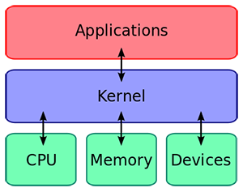
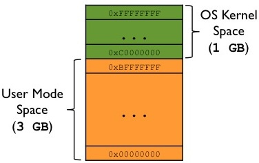
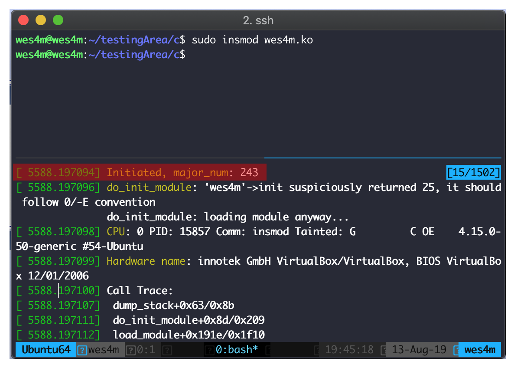

إستغلال ثغرات النواة Kernel exploitation
من اكثر الامثلة شيوعآ للإستخدام في هذا الموضوع هي مصطلحات مثل Android rooting, IOS Jailbreak ، فالكثير منا على إطلاع بها وبالغرض منها. ولكن هل تسائلت من قبل كيف تعمل في عمقها ؟
أيضآ لماذا لايمكنك إنهاء عمليات الـ Anti virus من مدير المهام في نظام وندوز بكل بساطة ؟ أو كيف تخفي بعض ملفات الإختراق نفسها عن برامج تتبع الإتصالات ومدير المهام وغيره.
كل هذه الإمور والكثير من الأمثلة الإخرى يمكن تنفيذها بعدة طرق أحدها ومن أهمها هي إستخدام نواة النظام وإستغلالها.
ماهي النواة (Kernel) ؟
بشكل مبسط، تعمل أنظمة التشغيل مثل Windows, Linux, IOS وغيرها بنظام الطبقات والنواة هي أحد هذه الطبقات

فماتراه كمستخدم عادي هو الـ Userspace أو الطبقة الاولى اللتي تحتوي على البرامج وسطح المكتب وغيره من واجهات، تليها النواة واللتي بدورها تتواصل مع عتاد الجهاز من ذاكرة، لوحة مفاتيح، المعالج وغيره .. فهي جزء حساس جدآ وغير قابل للأخطاء البرمجية. على سبيل المثال في الـ Userspace عندما يحدث خطأ في برنامج ما قد يتوقف البرنامج عن العمل أو يتمكن من تفادي الخطأ عن طريق الـ Exception handlers
بينما الأخطاء في النواة قد تؤدي لعطب أجهزة وفي الغالب توقف النظام وإجبارك على إعادة تشغيله.
النواة مسؤولة عن التواصل مع العتاد والمدخلات والمخرجات للجهاز وإدارة نظام التشغيل بشكل مفصل جددآ فهي المسؤولة عن التواصل مع الذاكرة وحجز المساحات وعن تنظيم الصلاحيات وإدارة عمليات النظام وجدولتها، وأيضا حماية المستخدم وتوفير أمكانيات للعليات بالتواصل فيما بينها (IPC) وغيرها الكثير من مسؤوليات كبيرة تعق على النواة.
تعمل أغلب أنوية الأنظمة على شكل Drivers & Modules على عكس الـ Userspace اللذي يعمل على شكل تطبيقات في الغالب.
أين تقع النواة ؟
كما نعلم بأنه عند تشغيل أي برنامج يقوم النظام ( النواة ) بحجز مساحة في الذاكرة للبرنامج ومن ثم القيام بعلميات تجهيز الذاكرة وتحميل البرنامج فيها وجدولته وتشغيله. لكل برنامج مساحة في الذاكرة محددة قد تبدوا جميع موجوة في نفس العنوان من الذاكرة وذلك بسبب ( Virtual address space ) وهو موضوع واسع يمكنك القراءة فيه.
بشكل مبسط هو عنوان وهمي أو إفتراضي يعطى لكل عملية ولكنه مربوط بعنوان آخر على حسب العملية (Physical address) في الذاكرة.
فالنواة توجد في منطقة ثابته في الذاكرة ويتم إعطاء عنوان إفتراضي لها ايضا مع كل عملية.
ففي أنظمة الـ 64-bit سنرى أن لكل عملية عنواين إفتراضيه في الذاكرة من 0x000’00000000 - 0x7FF’FFFFFFFF
بينما في 32-bit فالنطاق هو من 0x00000000 - 0x7FFFFFFF
ولكل عملية يتم تقسيم النطاق فيربط جزء منه للنواة لتصبح كل عملية قادرة على التواصل مع النواة.
صورة مثال لذاكرة عملية في النظام:

كيف تتواصل البرامج مع النواة ؟
تتعمد طريقة التواصل على نظام التشغيل وآليته. لنأخد على سبيل المثال Linux
عندما يقوم مبرمج بعمل عملية وظيفتها طباعة نص للمستخدم فتسلسل الأحداث هو كالتالي
يمكننا عمل كومبايل وتتبع العملية عن طريق ltrace & strace أو تتبع سورس كود فنكشن printf وسنرى أن المسار التالي هو المتبع
ومايهمنا هنا هو النقطة الأخيرة SYSCALL فهذه هي الوسيلة الأساسية في التواصل مع النواة. وظيفتها تغيير مود المعالج الى kernel mode ونقل التنفيد للنواة فالـ SYSCALL هي تعليمة محددة INT 0x80 مع معلومات يتم وضعها في المسجلات والذاكرة
تقوم بعمل Exception فيقوم المعالج بدوره بالعثور على عنوان الـ Exception handler وهو ثابت تحت مسمى Vector 128 أو System call handler ويشير إلى فنكشن بإسم system_call موجود بالنواة يقوم بتوجيه المعطيات على حسب رقم موجود في أحد المسجلات ( Registers ) فيوجهه للفنكشن المناسبة في حالتنا هذه sys_write الموجودة في النواة واللتي ستقوم بالعملية المطلوبة والتواصل مع الشاشة لطباعة النص.
لماذا لايمكننا إستدعاء عملية sys_write الموجودة في النواة مباشرة من الـ Userspace ؟
لانها ستعدم إنفصالية النواة عن الـ Userspace وستؤدي الى مشاكل امنية وعدم إستقرار في النظام فتواصل العمليات مباشرة مع النواة كما ناقشت سابقآ من السهل أن يؤدي لإغلاق النظام.
ثغرات النواة
بالرغم من طول المقدمة السابقة إلا أنها مختصرة ولاتعطي للنواة نصيبها من الشرح فهي أكبر واهم جزء في أنظمة التشغيل.
أما الآن فكيف يمكننا الوصول لذاكرة النواة، فالمعالج من وظيفته حماية ذاكرة النواة فلا يمكن للمبرمج بكل بساطة أن يحاول القراءة من عنوان ضمن نطاق ذاكرة النواة أو الكتابة إليه أو القفز لتنفيد كود فيه.
إلا أنه هناك بعض الهجمات اللتي تستهدف المعالج وبعض الالكترونيات في الجهاز مثل Meltdown & Spectre
ولكنني سأتحدث حول ثغرات تنتج بسبب أخطاء برمجية سواء من مبرمجي Drivers & Modules النظام أو من شركات خارجية تقوم ببرمجة Drivers خاصة بهم للعمل مع النظام مثل كروت الشاشة وكروت الشبكة وغيرها من أجهزة أو برامج تحتاج لعمل Driver خاص.
فالثغرات التي تحدث بالنواة هي نفسها التي يمكنك العثور عليها في الـ Usersapce مثل ثغرات الـ Bufferover flow, use-after-free, race conditions وغيرها من ثغرات مع إختلاف طرق الإستغلال، أغلب ثغرات النواة تكون معقدة وعبارة عن سلسلة من الثغرات مربوطة ببعضها (exploit chain) للوصول للهدف.
كما طرحت في مقدمة الموضوع، على سبيل المثال أحد طرق عمل root لأجهزة Android هي ربط عدد من ثغرات النظام ببعضها بدئآ من الـ Userspace حتى الوصول للنواة (Kernel) ومن ثم التعديل على جدول الصلاحيات على سبيل المثال وإعطاء عملية محددة أعلى صلاحية في الجهاز root.
في هذا الموضوع سأتطرق لثغرة واحد فقط مع مثال لإستغلالها للحصول على رفع صلاحية (LPE - local privilege escalation)
Module مبسط لنواة Linux
شرح مفصل لطريقة برمجة Module للنواة
قمت ببرمجة Module بسيط يحتوي على ثغرة يمكن إستغلالها لرفع الصلاحيات.
بإستخدام الشرح السابق لتحميل مستلزمات الكومبايل. قم ببناء الـ Module التالي وتنصيبه في النواة
عند تنصيبه في النواة بنجاح ستظهر الرسالة التالية

أشجع القارئ على محاولة العثور على الثغرة في الكود السابق ومحاولة إستغلالها كتحدي ومن ثم إكمال القراءة للإطلاع على الحل.
الثغرة
نبدأ بتحليل عمل الـ Module
فأول خطوة تحدث عند تنصيبه هي
وفيها يتم تسجيله كـ Driver في النظام ووضع مؤشر لفنكشن ما في fun_ptr وثم طباعة رسالة.
نرى أيضآ أن طريقة التواصل الوحيدة معه هي عن طريق device_write واللتي تستقبل معطى integer من المستخدم وعلى أساسه تقوم بتنفيذ أمر من أمرين وهما
نلاحظ أن الأمر الأول 1 مسؤول عن تصفير متغير counter وأيضا المؤشر السابق اللذي تم وضعه في البداية في fun_ptr
والأمر الثاني 2 يقوم بإستدعاء الفنكشن الموجودة في المؤشر fun_ptr
نرى أنه في الحالة الطبيعية يمكننا إرسال أمر 2 واللذي بدوره سيقوم بإستدعاء funt_ptr -> incCounter
وثم زيادة العدد في counter وطباعته. ولكن! ماذا لو قمنا بإستدعاء الأمر 1 قبل وثم استدعينا 2 ما اللذي سيحدث؟
في هذه الحالة سيكون المؤشر fun_ptr = NULL
وعند محاولة إستدعاءه سيحدث خطأ null pointer derefernce يؤدي لإغلاق النظام بما أنه في النواة. وهذا الخطأ هو ثغرتنا اللتي سنستغلها.
عند البحث عن قيمة NULL في لغة الـ C سنرى أنها تساوي 0 مما يعني أن النواة تحاول إستدعاء فنكشن في العنوان 0
بالعودة للصورة اللتي تشرح توزيع الذاكرة في العمليات نرى أن العناوين تبدأ من 0x0 … وتقع في الـ Userspace
ممايعني أنه يمكننا إستخدام الذاكرة في هذا العنوان ووضع فنكشن من كتابتنا لتقوم النواة بتنفيذه بصلاحياتها والقيام بتنفيذ مانريده.
الإستغلال
كل عملية في النظام يتم تخزين معلوماتها في struct في النواة يمكننا أن نرى ترتيبه من سورس linux sched.h
يوجد مركب آخر بداخل المركب الأول بإسم cred ويحتوي على صلاحيات العملية cred.h linux
اذا تمكنا من تغيير قيمة euid الى 0 فسيعتبر النظام العملية بصلاحيات root
يمكننا أن نسلك طريق عمل كود مسؤول عن تغيير المركب بإستخدام prepare_creds وثم تحويله الى shellcode ووضعه في العنوان 0x0.
مثال على الآلية السابقة بشكل مفصل
الإستغلال النهائي
الحماية من الثغرة
نظام Linux يحتوي على حماية مفعلة إفتراضيا mmap_min_addr مهمتها منع عمليات الـ Userspace من حجز ذاكرة في العنوان NULL أو 0
أيضا من مهمة المبرمج التأكد من عدم تنفيد فنكشن بدون التأكد من أن العنوان صالح للإستخدام.
الختام
توجد مصادر كثيرة وتقنيات عديدة جدآ ومختلفة وثغرات مكتشفة سابقآ بشروح مفصلة يمكنك البحث عنها.
بعض منها:
http://www.jackson-t.ca/lg-driver-lpe.html
https://0x00sec.org/t/kernel-exploitation-dereferencing-a-null-pointer/3850
https://www.abatchy.com/2018/01/kernel-exploitation-1
أرشيف مجموعة كبيرة : https://github.com/xairy/linux-kernel-exploitation